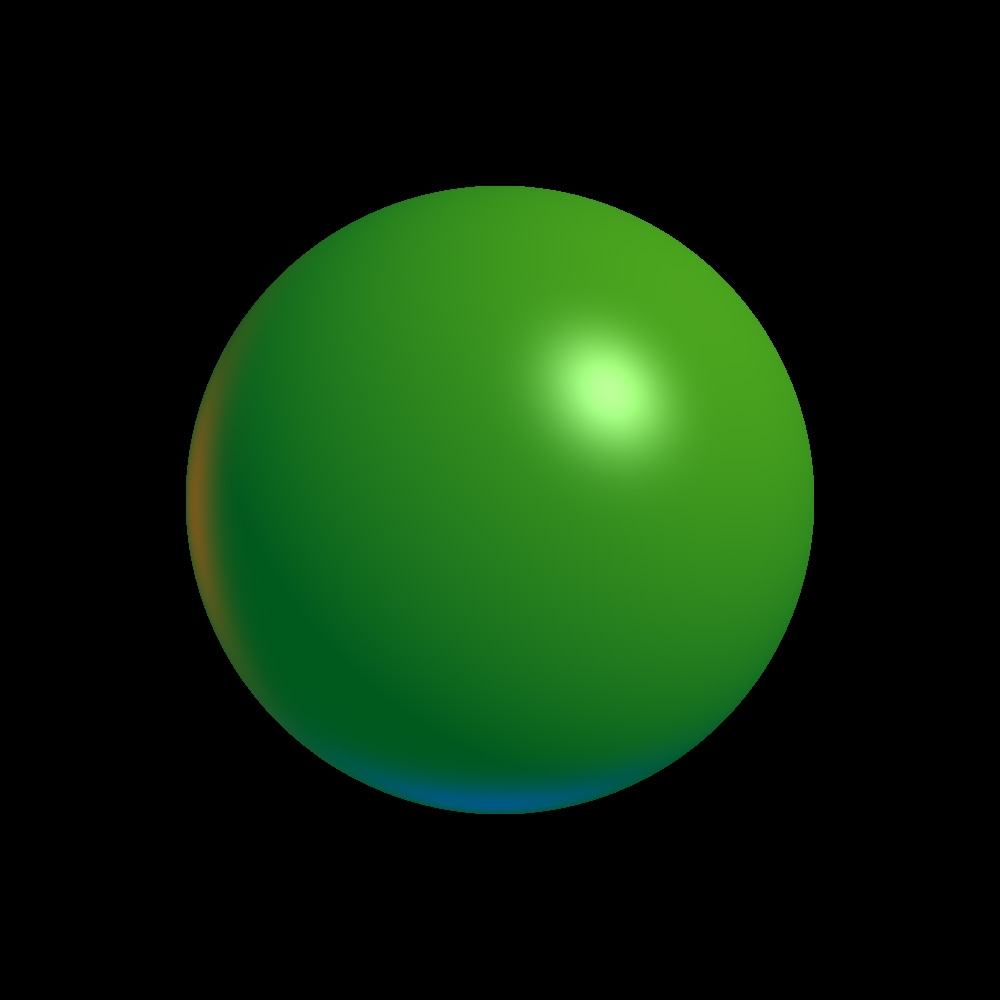
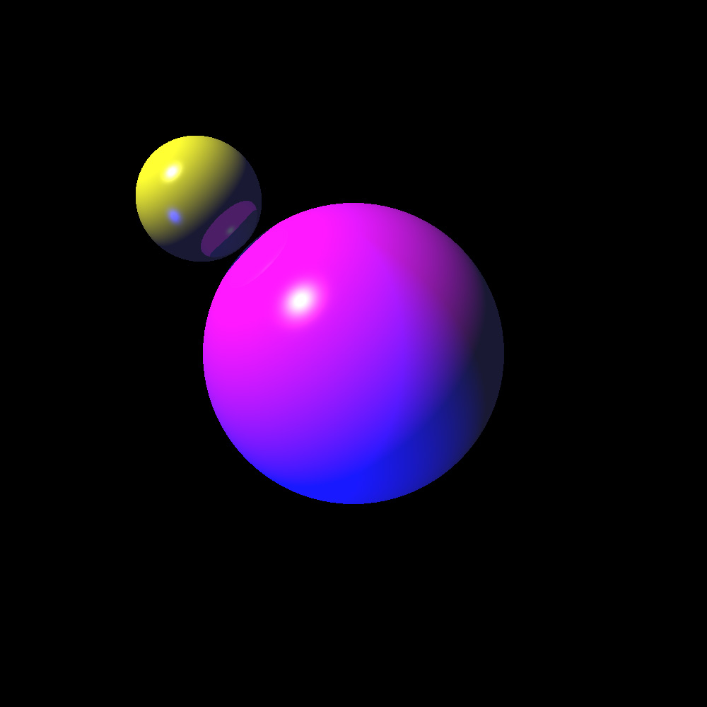
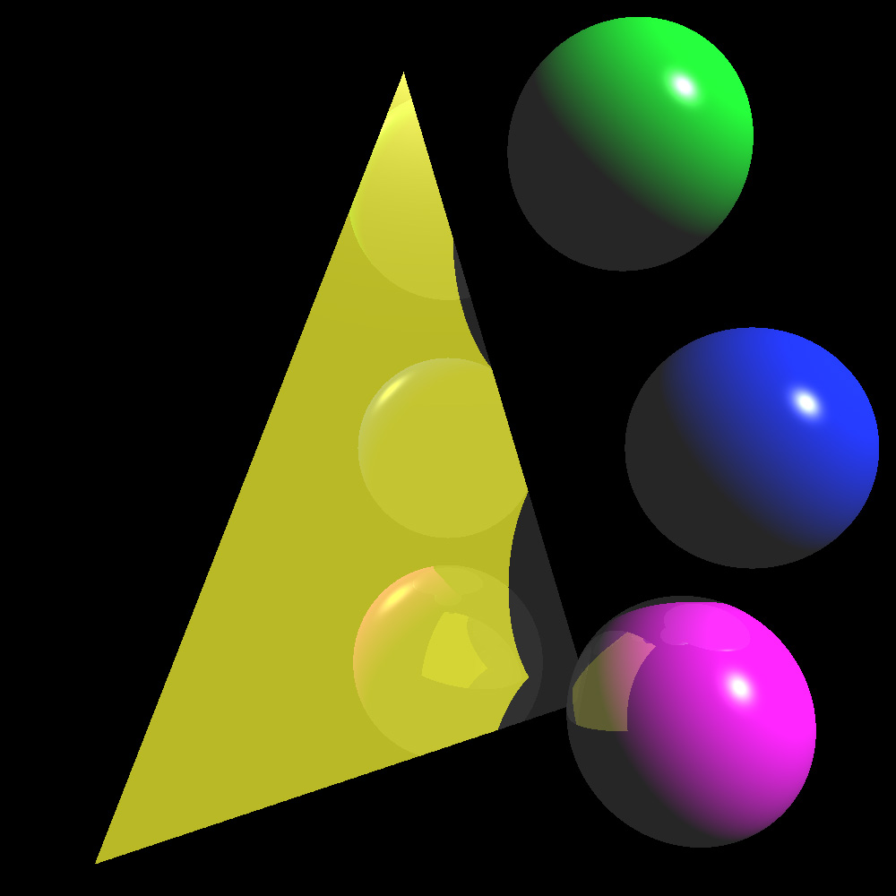
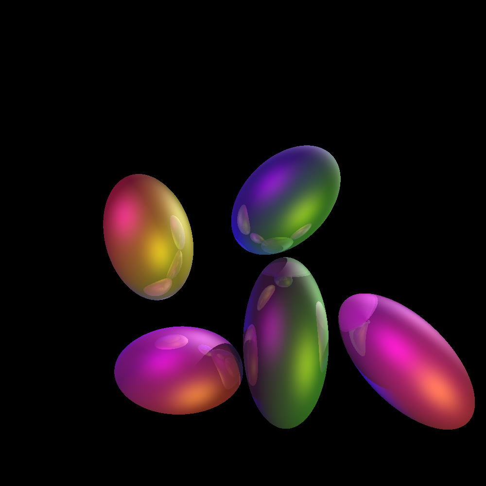
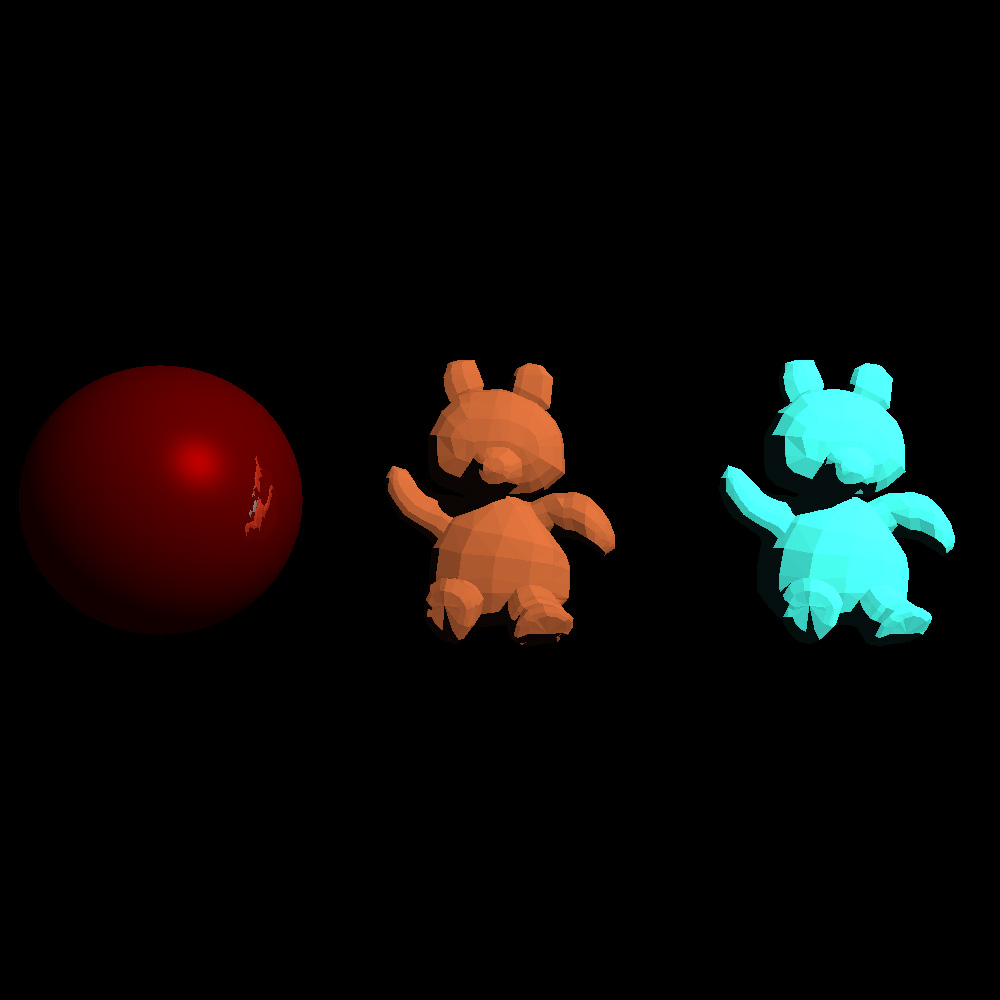

All images were produced by outputting to a .PNG file, then converting to .JPG format for the purposes of embedding on this page. Open image in new tab to see the full-size image.
❮
❯
1 / 5

Shading from multiple light sources
Time to run: 00:00:01
2 / 5

Simple reflection with spheres
Time to run: 00:00:01
3 / 5

Reflection with transformations and triangles
Time to run: 00:00:03
4 / 5

Easter Eggs - Ellipsoids with reflections and multiple light sources
Time to run: 00:00:04
5 / 5

Reflection with red sphere and .obj files for 2 teddy bears
Time to run: 03:00:00